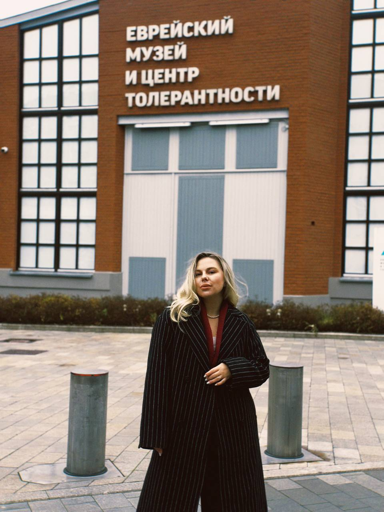
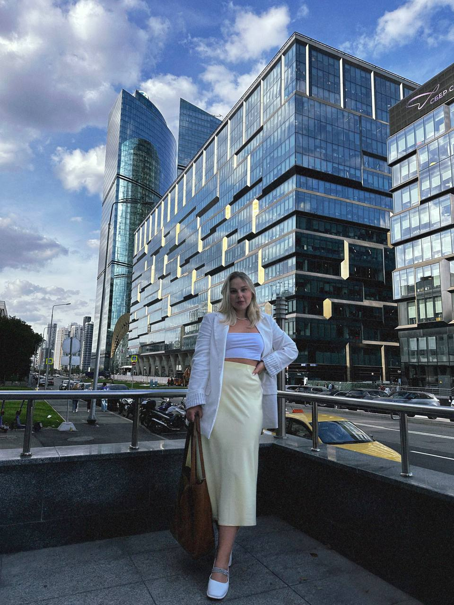

Онлайн Психолог
Анастасия Васильева
Индивидуальное и семейное консультирование. Краткосрочный доказательный метод КПТ и долгосрочная терапия.

Создаю безопасное пространство без осуждения, чтобы вы разобрались в своих мыслях, чувствах и нашли опору внутри себя.

Я — ваш проводник в мир индивидуальной и парной терапии Моя задача — не дать вам «правильные» ответы, а создать уникальное пространство.
Эти состояния — не приговор. А сигналы.Сигналы, что ваша психика просит внимания и поддержки. Им можно — и важно — помочь.
Консультация оплачивается за 25 часов до назначенного времени.
Оплата производится на карту Т-Банка по номеру телефона:
+7 (999) 170-59-56 (Анастасия Алексеевна В.)
Онлайн — 50−55 минут.
Очно — 50 минут.
Частота встреч: 1 раз в неделю
Консультации проходят Онлайн на платформе Google Meet, Яндекс.Телемост, FaceTime или Очно по запросу в г. Москва (при наличии возможности очной встречи).
Индивидуально со взрослыми людьми, с парами с супружескими/ в отношениях.
В индивидуальном формате с людьми с химическими зависимостями (алкогольные, наркотические), а также с игровыми зависимостями.
хочу мучачо